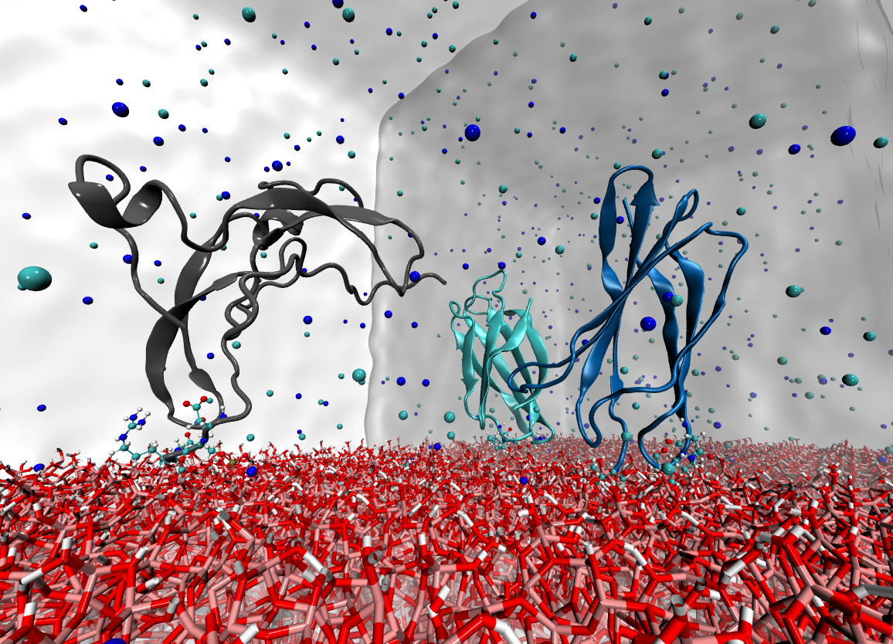
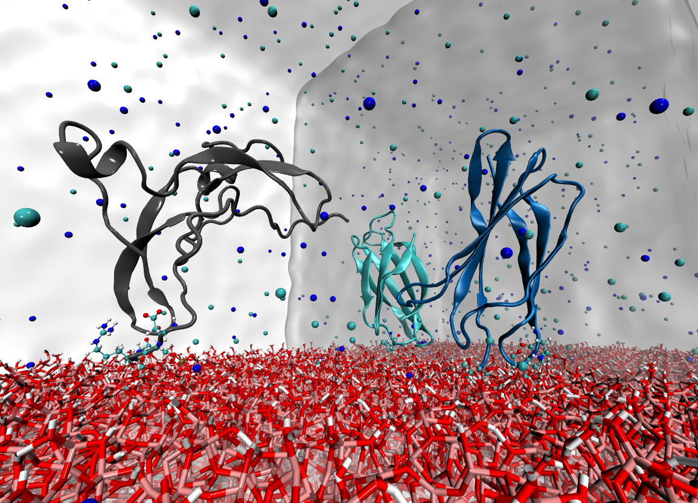

HMI Group
Susan Köppen
Impressum
| Home |
Vita |
Publications |
Research |

In the biomolecular modeling group, we are primarily working on issues related to biological macromolecules in solution and in contact with materials interfaces. We particularly use computational atomistic simulations to decipher macroscopic phenomena at the molecular level in joint projects with experimental or other theoretical groups. The systems can be investigated with a few hundred atoms using DFT applications up to a few million atoms in classical simulations. The choice of method depends directly on the research question.
My team "biomolecular modeling" in the "Hybrid Materials Interfaces" group in the Department of Production Engineering primarily pursues materials engineering issues. However, physical and biochemical fundamentals are used and show the diverse scientific background of our group.
composition of the group:
Susan Köppen (group leader)
Students:
Jana Lierath (SALFIB)
Annika Niemann (HD)
 

BIOMOLECULAR MODELING
Biological macromolecules are characterized by a strong structure-function correlation. In our atomistic simulations, we are particularly interested in the structural effects due to
- environmental variables (water, salt, pH)
- the binding of ligands
- post-translational modifications (PTM)
Here we can directly draw conclusions about changes in functionality by changes in structure. Especially in collaboration with experimental studies, we obtain valuable information about key elements that influence the macroscopic functionality of certain macromolecules.
List of running projects:
Huntington Disease (HD)
Huntington’s disease is a hereditary neurodegenerative disorder, which is caused by the peptide huntingtin (HTT). This project aims the structure prediction of HTT in context with the Huntington’s disease by means of advanced replica exchange approaches. The formation of pathological Htt amyloid fibers can be suppressed by binding to appropriate chaperone complexes. With the molecular understanding of the binding through the identification of key players in docking analysis and molecular dynamics simulations, we hope to thus provide incentives for novel therapeutic approaches.
Cooperating groups:
Kirstein Group (Cell Biology, FB2, Uni Bremen)
Neudecker Group (Theoretical Chemistry, FB2, Uni Bremen)
M. Kulke, (Vermass Lab@ MSU, USA)
Related publication
Fibrilar Proteins (SALFIB)
Fibrious protein scaffolds are particularly attractive for various tissue engineering applications. However, to date it is not yet understood whether specific surface interactions or buffer conditions contribute to the fibrillogenesis of ECM proteins (Fibronectine) or Plasmaproteins (Fibrinogen). With a multiscale combination of closely connected simulative (HMI) and experimental (AG Brüggemann) methods, we want to adress the underlying molecular mechanism of fibrillogenesis with regard to environmental and molecular conditions.
Cooperating groups:
Brüggemann Group (Biophysics and Applied Biophysics, HS Bremen)
M.Noeske (IFAM, Bremen)
Related publications:
S. Stamboroski, et al., Macromolecular Bioscience 21 (5), 2000412 (2021)
S. Stamboroski et al., Biomacromolecules 22, 4642-4658 (2021)
M. Kulke et al., Journal of Chemical Information and Modelling 59, 4383-4392 (2019)
Chitosan Interactions
Chitosan is an attractive biomaterial as it combines excellent biocompatibility with anti-inflammatory properties and antimicrobial activity. The effizient production and use of chitosan composites or chitosan as carrier material for other biological macromolecules require a molecular understanding of the adjustable physicochemical properties of chitosan. In this project we aim to unravel the influence of the molecular compositon of chitosan as well as environmental parameters on chitosan - biomolecular binding processes.
Cooperating groups:
Ignatov Group (Physical Chemistry, LSU, Nizhni Novgorod, RU)
Brüggemann Group (Biophysics and Applied Biophysics, HS Bremen)
Related publications:
A.A. Avdoshin et al., Mater. Adv. accepted, 1–12 (2023)
MODELING AT INTERFACES
Surface properties of oxidic materials such as the hydrophobicity/hydrophilicity or the surface charge density determine the molecular structure and flexibility of the liquid phase near the solid-liquid interface by forming an electrical double layer. This provides a real barrier to direct molecular adsorption at such interfaces. In our group, we use a combination of DFT and force field applications to study adsorption processes from small volatile molecules to biological macromolecules or aggregates thereof. We systematically look at various factors influencing molecular adsorption, such as changes in surface charge density, surface functionalization, or impurities at the interface.
List of running projects:
Waster Water Pollutants (QM3)
This project is embedded in the DFG funded research training group 2247 "Quantum Mechanical Materials Modeling - QM3". In a multiscale approach we investigate the influence of environmental parameters on the adsorption of wastewater contaminants on titania surfaces and their surface induced degradation.
Coorperating groups:
TiO2:
W.Dononelli (MAPEX, Uni Bremen)
Neudecker Group, (Theoretical Chemistry, FB2, Uni Bremen)
Klüner Group, ( Theoretical Chemistry, Uni Oldenburg)
Frauenheim Group, (CMS, FB1, Uni Bremen)
Prof. Giancarlo Franzese, (Statistical Physics of Bio-Nano Complex Matter,
University of Barcelona, Spain)
ZnO
Dra. Alejandra C. Carranza (ENES Morelia, UNAM, Mexico)
Related publications:
V.K. Gupta et al., Journal of Physical Chemistry C 126, 17544-17553 (2022)
F. Balzaretti et al., chemrxiv.14465436 (2021)
F. Balzaretti et al., The Journal of Physical Chemistry C 125, 13234-13246 (2021)
Protein modeling at oxide interfaces
SiO2, TiO2 and Al2O3:
It is well known that key players for the interactions of (bio)molecules with materials surfaces are to be found in the molecular architecture itself as well as in their immediate environment. Solvated ionic species in a biological environment and the water itself significantly determines the nature of molecular contacts. Especially for molecules/ particles with titradable surface groups, additional environmental influences, such as ionic strength or pH thus contribute to the electrical double layer formed on the molecular surfaces and determine the nature of contacts. These effects on the molecular level are able to trigger macroscopic morphological changes of the adsorbed material.
We investigate the adsorption of a number of proteins on selected bioceramic materials with focus on differences in the adsorption modes, surface induced conformational and thus functional changes upon adsorption.
Coorperating groups:
Brüggemann Group (Biophysics and Applied Biophysics, HS Bremen)
M. Uhrhan (biophysics, Uni Bremen,
present adress: Imperial College London, UK)
M. Kulke*, N. Geist (Biochemistry, Uni Greifswald;
*present address: (Vermass Lab@ MSU, USA))
P. Giefer (IWT, FB4, Uni Bremen)
Related publications:
N. Hildebrand et al., Physical Chemistry Chemical Physics 20, 19595-19605 (2018)
N. Hildebrand et al., ACS Biomaterials Science & Engineering 4, 4036-4050 (2018)
L. Derr et al., Biointerphases 11, 011007 (2016)
N. Hildebrand et al., Journal of Physical Chemistry C 119, 7295-7307 (2015)